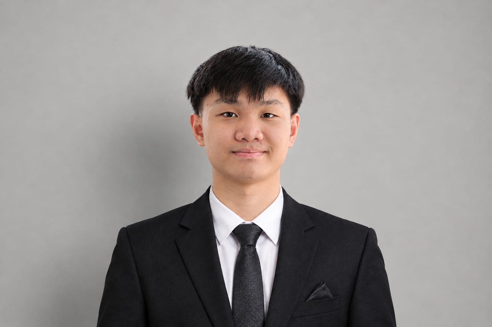

Stronger communities
People work together, build trust, and support neighbours who need a helping hand.
01Small actions. Big impact. A better world.
Welcome! Your time, skills, and kindness can help build stronger communities. Discover meaningful ways to support people and protect our planet.

Volunteering means freely giving your time, energy, or skills to support others and contribute to the common good. The goal is to help—not to receive financial rewards.
It connects people, builds trust, and turns shared concerns into positive action.
Explore the UN Volunteers definition ↗Volunteering creates shared value. It can respond to real needs while helping volunteers learn, connect, and grow.
People work together, build trust, and support neighbours who need a helping hand.
01Volunteers practise communication, teamwork, problem-solving, and responsibility.
02Working with different people can grow empathy, respect, and a sense of belonging.
03Small, consistent actions can contribute to healthier places and a more caring society.
04Organised volunteering is coordinated by a school, foundation, charity, community group, or non-profit organisation. Teams plan activities, share responsibilities, and work toward a common goal.
04 WAYS TO GET INVOLVEDJoin a group to clean public spaces, plant native trees, restore mangroves, or teach people about reducing waste.
Support reading clubs, homework sessions, language practice, or creative workshops organised by a school or learning centre.
Help organise inclusive community events, visit older adults with a supervised group, or prepare activity packs for families.
Sort donated goods, prepare care packages, or support a verified charity's fundraising and community distribution activities.
You do not need to travel far to make a difference. In Indonesia, neighbours, students, and local groups can work together to respond to needs close to home.
COMMUNITY-BASED IDEAS Mangrove planting · Indonesia · Photo: Kompas.com ↗
Mangrove planting · Indonesia · Photo: Kompas.com ↗Change often begins with people caring for the place they call home.
Work with residents to collect litter and sort recyclable materials. This helps keep shared spaces cleaner and encourages responsible waste habits.
Learn more: WWF-Indonesia ↗Help children practise reading, basic English, or school subjects through a supervised school or community programme. This gives learners extra support and encouragement.
Learn more: Indonesia Mengajar ↗Help a trusted community group collect, sort, and distribute useful goods. Careful sorting makes donations more practical and respectful for recipients.
Learn more: FoodCycle Indonesia ↗Join a properly planned planting activity using suitable local species. It can support habitat restoration and help communities care for green spaces and coastlines.
Learn more: Rinjani-Lombok MIDAS ↗Take part in a school- or organisation-supervised visit, conversation, or shared activity. Friendly contact can help older neighbours feel included and valued.
Learn more: Indonesian Red Cross (PMI) ↗FoodCycle Indonesia describes volunteer activities such as preparing, packing, and distributing surplus food to local communities.
See FoodCycle volunteering ↗International volunteering connects people and organisations across countries. It can support long-term cooperation on challenges that affect the whole world.
GLOBAL IDEASJoin cross-country awareness campaigns, citizen-science projects, or coordinated habitat restoration led by qualified local partners.
Support trusted humanitarian organisations through carefully coordinated fundraising, supply sorting, translation, or recovery education projects.
Take part in supervised online cultural exchanges, language practice, or learning-material projects with partner schools in other countries.
International projects should be organised with reputable partners. Disaster response, wildlife care, and field conservation require appropriate training, permissions, and adult or professional supervision.
A thoughtful volunteer is prepared, respectful, and ready to learn.
Think about the community or issue you care about.
Check the organisation, activity details, and how donations or support are used.
Follow instructions, respect the people you support, and work within your skills.
Learn from the experience and look for safe ways to stay involved.
We are a team of three students who believe that learning about volunteering is also a way to inspire action. Get to know the people behind this website.
3 STUDENTS · 1 SHARED GOALHello! I enjoy learning about social issues and finding useful information. I contributed by researching volunteering and writing the website content.
Research facts, collect examples, and write website content.

Hi! I like creative design and turning ideas into clear visuals. I contributed by designing the website layout, choosing its colours, and arranging the visual elements.
Design the layout, choose colours, and arrange visual elements.
Hello! I enjoy checking details and making sure information is easy to understand. I contributed by editing the English, organising the sections, and checking the website features.
Check language, organise pages, and test website features.
You do not have to change the whole world in one day. Start with one thoughtful action, invite others to join, and keep showing up.
Start with one action ↑Scroll or pinch to zoom · drag to move · Esc to close


.jpg?width=900)